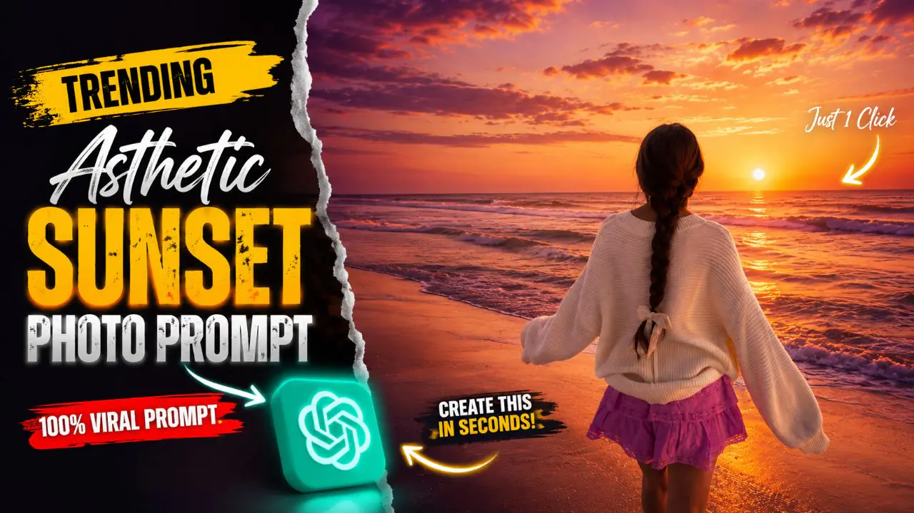

Home / Trending Cinematic Beach Portrait Photo Prompt
Trending Cinematic Beach Portrait Photo Prompt
By Prompt Library•17 May 2026

Cinematic night portrait and Asthetic beach photos are trending everywhere on Instagram, Pinterest, and TikTok. These photos look stylish, dreamy, and professional with glowing lights, dark backgrounds, and dramatic effects. The best part is that now you can also create this type of picture with the help of Chat Gpt .
A good cinematic night portrait prompt and Asthetic beach helps create realistic lighting, soft glow effects, sharp details, and a movie-like atmosphere. Whether you want a moody portrait, neon lighting, or a DSLR-style night photo Asthetic beach, the right prompt can completely transform your image in seconds.
In this article, you will discover a trending cinematic night and Asthetic beach Portrait photo prompt . Its easy to use with the help of one magic prompt . Its Beginner-friendly , and perfect for creating Ai viral Photos.
Want more awesome prompts?
Join our community and get the latest viral prompts daily.
Create a cinematic aesthetic beach sunset photo with a soft orange-pink-purple gradient sky, glowing sunset near the horizon, realistic ocean waves, warm reflections on wet sand, and dreamy golden-hour lighting. Use the uploaded person as the exact reference and preserve 100% facial features, identity, skin tone, hairstyle, body shape, outfit, and proportions exactly the same. Do not change the face, eyes, jawline, nose, lips, hair texture, beard, clothes, physique, or any personal details in any way. Identity lock enabled, exact character preservation, no face modification, no beautification, no AI-generated facial changes. Subject standing alone in the center facing the sea from the back in a natural candid pose, with realistic shadows and reflections on wet sand. Add soft glow around the sunlight, slightly moody vibe, ultra realistic details, smooth cinematic color grading, Instagram story aesthetic, DSLR look, natural skin tones, subtle contrast, calm ocean atmosphere, depth of field, realistic lighting, high dynamic range, ultra detailed texture, professional photography style, 4K ultra HD quality.
? AI PROMPT
Ultra-realistic cinematic beach sunset portrait of the uploaded person standing alone near the shoreline, captured in a dreamy golden-hour atmosphere with a soft orange, pink, lavender, and deep purple gradient sky blending naturally across the horizon. The glowing sunset reflects beautifully on the wet sand and flowing ocean waves, creating a calm yet emotional cinematic mood. Preserve the exact identity, facial structure, skin tone, hairstyle, outfit, body proportions, and every personal detail exactly as the original reference image. Identity lock enabled — absolutely no face alteration, beautification, AI facial redesign, or change in appearance.The subject is viewed from behind in a natural candid pose while looking toward the ocean, with gentle wind moving the clothes and hair realistically. Add realistic barefoot footprints on wet sand, subtle reflections beneath the subject, soft sunlight bloom, and cinematic lens flare from the horizon. Ocean waves should feel dynamic and realistic with smooth foam textures, glowing reflections, and natural motion. The entire composition should feel peaceful, emotional, and visually aesthetic like a luxury travel film scene.Use ultra-detailed textures, HDR lighting, cinematic depth of field, realistic shadows, DSLR photography realism, volumetric sunset lighting, soft moody contrast, smooth film-style color grading, atmospheric haze, realistic skin tones, and highly detailed environmental reflections. Add subtle grain, calm ocean mist, and warm golden light wrapping naturally around the subject for a premium Instagram-reel aesthetic. Professional photography look, hyper realistic details, masterpiece composition, 4K ultra HD quality, vertical 9:16 format.
? AI PROMPT
Create a cinematic dreamy night portrait with a strong soft white backlight glow behind the subject, creating a bright natural halo around the hair and body edges. Keep the face 100% original and realistic with no changes to facial features, skin tone, hairstyle, pose, outfit, expression, or body structure. Add clean white rim lighting with a very slight warm tone, soft bloom glow, glowing edges, subtle lens flare, smooth skin highlights, and DSLR flash photography aesthetics. Background should remain dark and minimal to make the white backlight stand out beautifully. Add soft atmospheric haze, floating dust particles, shallow depth of field, cinematic contrast, and ultra realistic skin texture. Enhance the image with premium cinematic color grading, dreamy mood, and high-detail glowing outline around the subject. Viral Instagram aesthetic, ultra realistic, soft white glow, elegant cinematic lighting.
? AI PROMPT
“Create a professional cinematic studio-style edit of the uploaded photo while keeping the person’s face, hairstyle, beard, skin tone, body proportions, pose, outfit, motorcycle, and overall identity 100% unchanged and realistic. Keep the original outdoor background intact without replacing it. Add a strong glowing backlight behind the person to create a soft white halo and rim light around the hair, shoulders, arms, and body edges. Use clean white glow with a slightly warm tone, soft bloom, subtle lens flare, and smooth cinematic lighting. Enhance the image with deep blacks, high contrast, sharp Sony A1 portrait quality, realistic skin texture, detailed shadows, and premium DSLR photography aesthetics. Add soft depth of field, dramatic cinematic color grading, and a polished high-end editorial look while preserving the natural environment and original composition.”
Trending cinematic night portrait and Asthetic beach prompts are becoming one of the easiest ways to create eye-catching AI images for social media. With the right lighting effects, realistic details, and cinematic mood, your photo can be instantly enhanced by the use of this prompt
You do not need expensive cameras or advanced editing skills to create these portraits. Just copy the prompt, upload your photo, and let AI generate a stunning cinematic result within seconds. It gives you a shocking results you can’t believe.